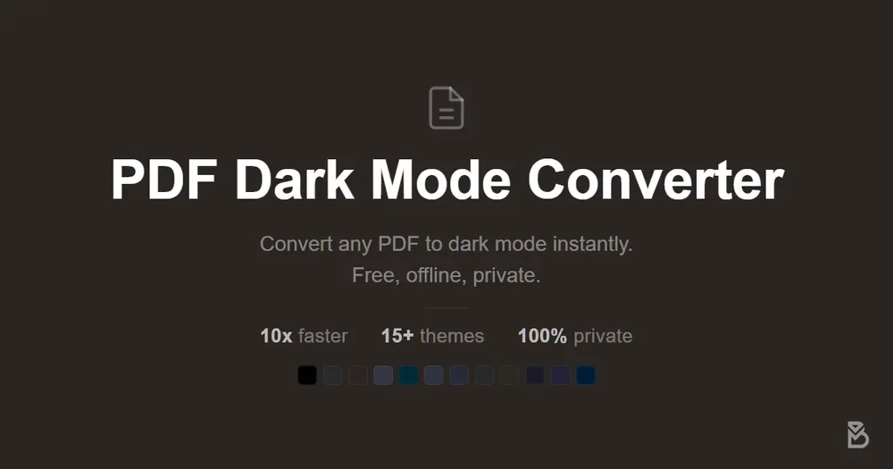
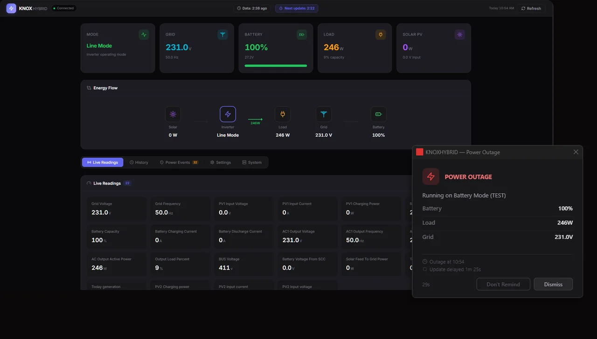
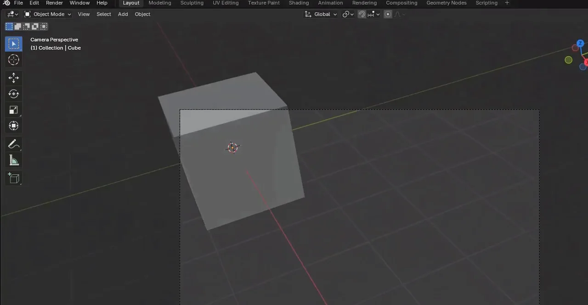
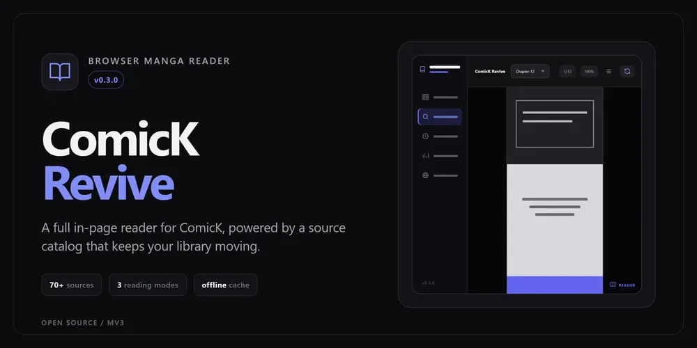
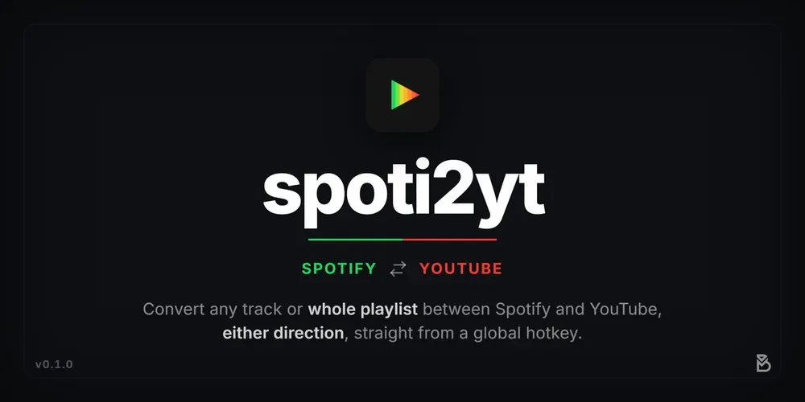
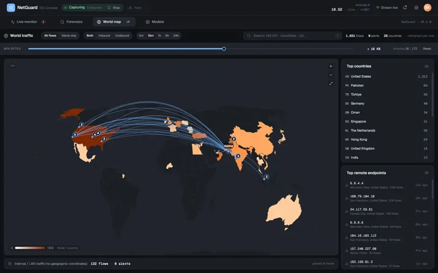
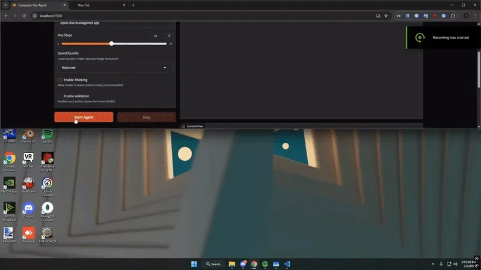

Pick one (or mix). KnoxHybrid Monitor shows its real cover and opens the finished sample page; the other images are stand-ins (their current social cards and a demo frame) until I capture real screenshots for each project.
Option A
Case studies. The three strongest projects get a large image and a short pitch each, alternating sides; the rest follow as a compact list. Every row opens that project's page.

01Web tool · 2026
Re-themes any PDF in the browser with 16+ themes, text still selectable. Files never leave the device.
JavaScript · pdf.js · GPU filters · ★ 35
Read more
02Windows tray app · 2026
A tray app that watches a Knox solar inverter and says so the moment the house drops to battery.
Rust · Tauri v2 · ★ 12
Read more
03Android app + Blender add-on · 2026
Point your phone, hit record: an Android phone becomes Blender's camera, baked straight to keyframes.
Kotlin · Python · ★ 12
Read moreOption B
Bento. Every project gets a card with its image; the first two large, the rest smaller. Most visual, closest to the Renders and Gallery previews.
01Web tool
Re-themes any PDF in the browser with 16+ themes, text still selectable. Files never leave the device.
02Windows tray app
A tray app that watches a Knox solar inverter and says so the moment the house drops to battery.
03Android app + Blender add-on
Point your phone, hit record: an Android phone becomes Blender's camera, baked straight to keyframes.

04Browser extension
A manga reading app inside the browser: 70+ sources, offline cache, and a resume that never loses your page.

05Windows tray app
Copy a Spotify or YouTube link, press a hotkey, and the match on the other side is on your clipboard.

06Security, ML
Live network intrusion detection: three layered detectors, MITRE ATT&CK mapping, alerts in about 50 ms.

07Local AI agent
A local vision-language model that operates the desktop from plain-language goals.
Option C
Index+. Today's list, refined: number, title, one line, kind, stack and year in columns. Hovering a row shows its image. Quietest and most compact.